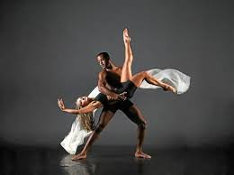
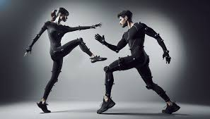

What You'll Find Here
Explore the various research and content.
Welcome to my exploration of the intersection between dance and technology! This project examines how innovation reshapes artistic expression, highlighting the interplay of movement, creativity, and cutting-edge tools.
Be ready to dive into the world of tech & dance!
Dance is a universal form of expression, deeply rooted in human history and culture. It reflects traditions, tells stories, and conveys emotions, serving as a bridge between communities and generations. By understanding its cultural significance, we can see how dance shapes and is shaped by society.
Advancements in technology have changed the way dance is created, performed, and shared. Tools like motion capture, virtual reality, and AI choreographers push the boundaries of movement and creativity. Technology also makes dance more accessible, bringing performances to global audiences through digital platforms and innovative formats.
Artists and technologists are working together to blend movement with cutting-edge tools. From interactive stage designs to AI-generated choreography, these collaborations demonstrate how innovation can expand the possibilities of artistic expression, inspiring both performers and audiences alike.
What You'll Find Here
Explore the various research and content.
What is Dance?
Explore its roots and artistry.
Technology in Dance
Learn about groundbreaking tools.
Case Studies
See how artists and tech merge.